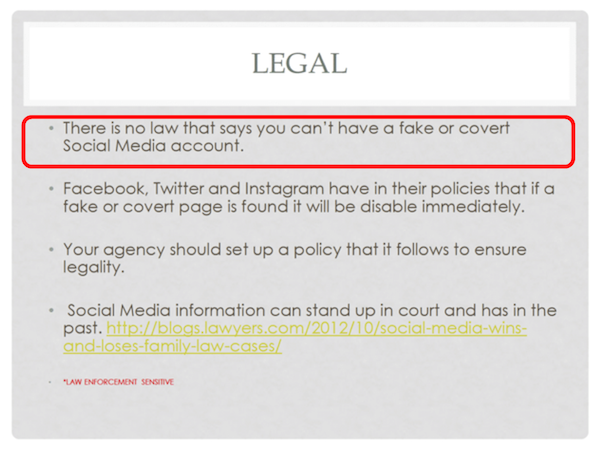
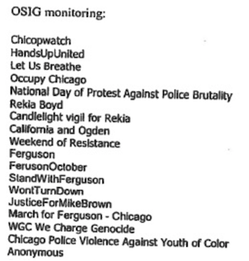
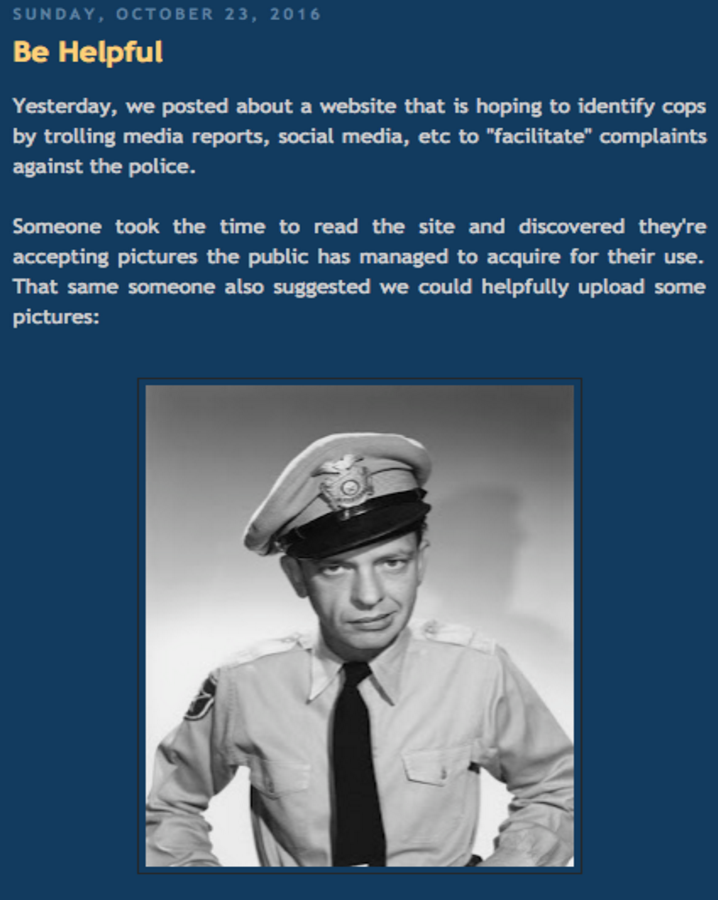

OpenOversight: Crowdsourcing surveillance of law enforcement
Format
Please interrupt at any time with questions or comments
Introduction and Motivation
Chicago is now one of the most heavily surveilled cities in the world
- Extensive video surveillance network "Operation Virtual Shield": 26,000+ cameras
- Extremely poor controls on the use of these cameras, from a recent audit: "OEMC [Office of Emergency Management] could not, in most instances, determine which individuals accessed the camera system or how those individuals used the cameras"
- Lots of other surveillance toys in use: Shotspotter, Automatic License Plate Readers (ALPR), Stingray cell site simulators
- Most recently: social media surveillance, body cameras
Social media surveillance training documents
Monitored groups
There is a long history of police misconduct in Chicago
- US Department of Justice just issued a report of their civil rights investigation of Chicago Police, finding racially biased policing, widespread misconduct, and little accountability.
- History of torture: Jon Burge was a police commander that ran a torture ring to extract false confessions; more recently Homan Square was reported by the Guardian as a "black site" where police "disappeared" 7,000 people
- Police covered up the murder of Laquan McDonald
- Chicago Police seize millions of dollars from Chicago residents not necessarily convicted of a crime and use this money to buy surveillance devices and fund the war on drugs. Read more: Inside the Chicago Police Department's Secret Budget
- Police abide by the "Code of Silence" preventing the reporting of problems by officers who may observe misconduct. Watch full episode of Fault Lines here.
The police complaints process is one method that residents subject to police misconduct can use to hold the police accountable.
An oversight body or internal affairs (depending on the complaint) are supposed to investigate and hold officers accountable for their actions.
In practice, thousands of complaints are almost immediately thrown away. From March 2011 - March 2015 at least 28% of complaints (4,000+ complaints) were trashed.
This was due to the investigators not knowing the name or badge number associated with an officer.
"I didn't get their name or badge number. But if I ever saw their face again, I would recognize them"
Enter OpenOversight
Initial launch in October (mostly to let people know we are doing it and to send their photos to us): https://openoversight.lucyparsonslabs.com
- Enable potential complainants to find the officers that they want to complain on
- Users put in the information they know about the officer and see a gallery of potential matches
- If they find the offending officer and recognize them, they can file a complaint using the provided name and badge number
Data Sources
- Officer-level demographic information: Name, gender, race, age (public records requests)
- Officer-level duty details: Rank, assignment, badge number, date they joined the force (public records requests)
- Officer images: acquired through social media scraping and through soliciting photographs from the public
Critical support from the activist community in Chicago: we have had a lot of support from groups like People's Response Team who do trainings on how to minimize risk while filming law enforcement. We had a community meeting with activist groups to get feedback on what they wanted to see in OpenOversight.
Privacy vs Transparency
- "You have no expectation of privacy in a public space."
- All photographs are of police officers in uniform in a public space.
- All information on OpenOversight only relates to the officer's duties as a public officer.
Response
Press response Chicago activists turn the tables on police surveillance, "How Chicago activists are using social media data to fight for police accountability" (CBC Radio)
Law enforcement response
“It seems to me a little extreme.” - Dean Angelo, President of Chicago Fraternal Order of Police
"Second City Cop", a popular blog for Chicago cops wrote a couple blog posts on us, including one encouraging police officers to submit false photos to us.
Public response
We had thousands of photos uploaded (both by the public and by people doing scraping for us): so many that data validation and entry became a blocker
Upcoming Release: Crowdsourcing Data Validation
Our next release adds crowdsourced data validation to OpenOversight.


Clearly lots of automation that can be done here if the developer personpower is there
Interested? You can help
- UX/design/development assistance: see open issues on GitHub. We use Python Flask, PostgreSQL, and S3 (for image storage).
- Know good practices around crowdsourcing data validation? Send me info!
- Want to help us sort through images and identify officers? Stay tuned for the 0.2 release and sign up
- Have ideas for potential features or extensions? Submit an issue!
- Interested and able to host a mirror?
- Want this in your city?